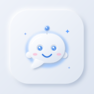

شروط الاستخدام
باستخدامك تطبيق Glowy Chat المملوك لـ أمين مجدي أمين، فإنك توافق على هذه الشروط وعلى سياسة الخصوصية. إذا كنت لا توافق عليها، فيُرجى عدم استخدام التطبيق.
1. الأهلية
يجب ألا يقل عمرك عن 13 عاماً، أو عن السن القانونية لاستخدام الخدمات الرقمية في بلدك إذا كانت أعلى من ذلك.
2. حسابك
- أنت مسؤول عن الحفاظ على سرية بريدك الإلكتروني وكلمة المرور، وعن أي نشاط يتم من خلال حسابك.
- يجب ألا يتضمن الاسم أو اسم المستخدم أو الصورة انتحالاً لشخصية أخرى، أو محتوى مسيئاً أو مخالفاً للقانون.
- يُسمح بحساب واحد لكل شخص، ولا يجوز بيع الحساب أو نقله إلى شخص آخر.
3. الاستخدام المقبول
يُحظر استخدام التطبيق — سواء في الرسائل أو الحالات أو التعليقات أو الصور أو الرسائل الصوتية أو الملفات أو المجموعات أو الملف الشخصي — في أيٍّ مما يلي:
- التحرش أو التهديد أو التنمّر أو خطاب الكراهية.
- نشر أي محتوى مخالف للقانون، أو إباحي، أو عنيف، أو يحرّض على إيذاء النفس أو الآخرين.
- أي شكل من أشكال استغلال الأطفال أو إيذائهم، ويتم الإبلاغ عن ذلك إلى الجهات المختصة.
- الرسائل المزعجة (Spam)، أو إرسال دعوات جماعية لأشخاص لا تعرفهم، أو الاحتيال، أو انتحال الشخصية.
- نشر البيانات الشخصية لأي شخص دون إذنه، أو انتهاك حقوق الملكية الفكرية.
- محاولة اختراق التطبيق أو تعطيله، أو الوصول إلى محادثات لست عضواً فيها، أو استخدام برامج آلية.
4. المحتوى الخاص بك
يظل المحتوى الذي ترسله ملكاً لك. وتمنحنا ترخيصاً محدوداً لتخزينه وإيصاله إلى من أرسلته إليهم فقط، وذلك لتشغيل الخدمة. وأنت مسؤول عن التأكد من امتلاكك الحق في مشاركة أي محتوى ترسله.
5. الألعاب
- الألعاب المتاحة في التطبيق (مثل لودو) مخصصة للتسلية بين الأصدقاء فقط، ولا تتضمن أي أموال حقيقية. ويُحظر استخدامها في المراهنات أو القمار.
- يتم رمي النرد بشكل عشوائي وعادل، ولا يمكن لأي طرف التحكم فيه. ويُحظر الغش أو محاولة التلاعب في اللعبة.
- تُحذف تلقائياً أي لعبة لم تشهد أي نشاط لمدة يومين.
6. الإشعارات
إذا وافقت على إذن الإشعارات، يرسل إليك التطبيق تنبيهات بالرسائل الجديدة حتى عندما يكون مغلقاً، ويمكنك إيقافها في أي وقت من الإعدادات.
7. الحظر والإبلاغ وإيقاف الحسابات
يمكنك حظر أي مستخدم أو الإبلاغ عنه من ملفه الشخصي، أو مراسلتنا على glowychatapp@gmail.com. ويحق لنا مراجعة البلاغات، وحذف المحتوى المخالف، وإيقاف أو حذف أي حساب يخالف هذه الشروط، ودون إنذار مسبق في حالة المخالفات الجسيمة.
8. الخدمة والتحديثات
قد نضيف ميزات أو نعدّلها أو نوقفها، وقد تتوقف الخدمة مؤقتاً لأغراض الصيانة أو لأسباب خارجة عن إرادتنا. التطبيق مجاني حالياً، وفي حال إضافة أي ميزات مدفوعة مستقبلاً فسنوضح ذلك مسبقاً.
9. إخلاء المسؤولية وحدودها
يُقدَّم التطبيق “كما هو” و“حسب توفره” دون أي ضمانات. وفي الحدود التي يسمح بها القانون، لا نتحمل المسؤولية عن المحتوى الذي يرسله المستخدمون، ولا عن أي خسارة غير مباشرة ناتجة عن استخدام التطبيق أو تعذّر استخدامه.
10. إنهاء الاستخدام
يمكنك التوقف عن استخدام التطبيق وحذف حسابك في أي وقت من الإعدادات ← حذف الحساب.
11. الحقوق والمصادر
- اسم Glowy Chat وتصميمه وشخصيته مملوكة لصاحب التطبيق.
- الرموز التعبيرية ثلاثية الأبعاد من Microsoft Fluent Emoji (رخصة MIT).
- الملصقات المتحركة من Google Noto Emoji (رخصة Apache 2.0).
- أصوات Glowy الخيالية (الإرسال والإشعارات واللمعة والسحر) مصممة خصيصاً للتطبيق، وأصوات الشخصيات (الحيوانات والضحك) من مكتبة Mixkit (رخصة Mixkit).
12. التعديلات
قد نعدّل هذه الشروط ونحدّث التاريخ المذكور أعلاه. وإذا كان التعديل جوهرياً فسنُعلمك به داخل التطبيق، ويُعدّ استمرارك في الاستخدام بعد ذلك موافقةً عليه.
13. التواصل
لأي استفسار: glowychatapp@gmail.com
Terms of Use (English)
Last updated: October 13, 2026
By using Glowy Chat, owned by Amin Magdy Amin, you agree to these terms and to our Privacy Policy. If you don't agree, please don't use the app.
1. Eligibility
You must be at least 13 years old, or the age of digital consent in your country if higher.
2. Your account
You're responsible for your email, password and all activity on your account. Names, usernames and photos must not impersonate others or be offensive or unlawful. One account per person; accounts may not be sold or transferred.
3. Acceptable use
Across messages, statuses, comments, photos, voice messages, files, groups and profiles: no harassment, threats, bullying or hate speech; no illegal, sexual or violent content or content encouraging harm; no exploitation or endangerment of minors (reported to authorities); no spam, mass invites to strangers, scams or impersonation; no sharing others' personal data without consent or infringing intellectual property; no hacking, disrupting the service, accessing chats you're not in, or automated abuse.
4. Your content
You own what you send. You grant us a limited licence to store and deliver it to its recipients so the service works, and you confirm you have the right to share it.
5. Games
Games such as Ludo are for fun between friends only — no real money, betting or gambling. Dice are random and fair; cheating or tampering with a game is not allowed. Games inactive for 2 days are removed automatically.
6. Notifications
If you allow notifications, the app sends you alerts about new messages even when it's closed. You can turn them off at any time.
7. Blocking, reporting & enforcement
Block or report users from their profile, or email glowychatapp@gmail.com. We may review reports, remove content and suspend or delete accounts that break these terms — without notice for serious violations.
8. The service
We may add, change or remove features, and the service may be interrupted for maintenance or outside causes. The app is currently free; any paid features would be announced first.
9. Disclaimer & limitation of liability
Glowy Chat is provided “as is” and “as available” without warranties. To the extent permitted by law, we aren't liable for user content or for indirect losses from using or being unable to use the app.
10. Termination
You can stop using the app and delete your account at any time in Settings → Delete account.
11. Credits
3D emoji: Microsoft Fluent Emoji (MIT). Animated stickers: Google Noto Emoji (Apache 2.0). Sound effects: original Glowy “Fairy Glass” sounds made for the app, plus character sounds from Mixkit (Mixkit License). The Glowy Chat name, look and mascot belong to the app owner.
12. Changes & contact
We may update these terms and the date above; we'll tell you in the app about important changes, and continued use means you accept them. Questions: glowychatapp@gmail.com